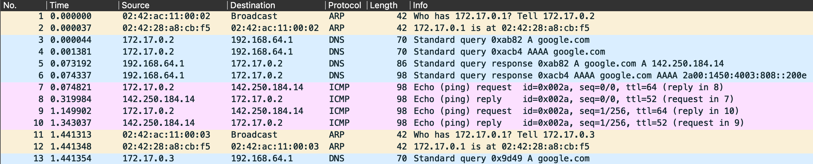
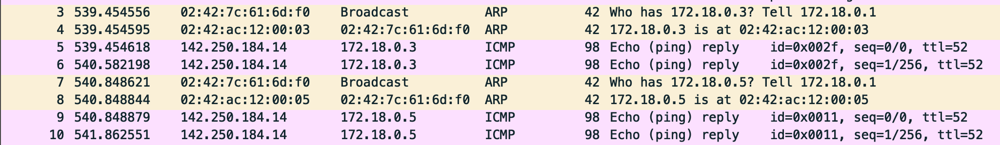

View Packet Captures
Note
Go to, View MAC Addresses of Each Bridge Interface and View MAC Addresses of Each Container Interface to confirm the MAC addresses of each device when analyzing the packet capture.
Docker0 Bridge Interface
Now, I located and opened the packet capture.
We noticed something interesting: The default MAC addresses of alpine1: 02:42:ac:11:00:02 and alpine2: 02:42:ac:11:00:03 were requesting the MAC address for the bridge’s interface, docker0: 02:42:28:a8:cb:f5, to send an Ethernet frame to google.com. The bridge’s interface was used as the next hop.
We also see that the DNS name server lookup for google.com could be possible only after an ARP reply from docker0: 02:42:28:a8:cb:f5.
Docker1 Bridge Interface
The same also applies here. the custom MAC addresses of alpine1: 02:42:ac:12:00:03 and alpine2: 02:42:ac:12:00:05 were requesting the mac-address for the bridge’s interface docker1: 02:42:7c:61:6d:f0 so it can send an ethernet frame destined to google.com. The bridge’s interface is used as the next hop.